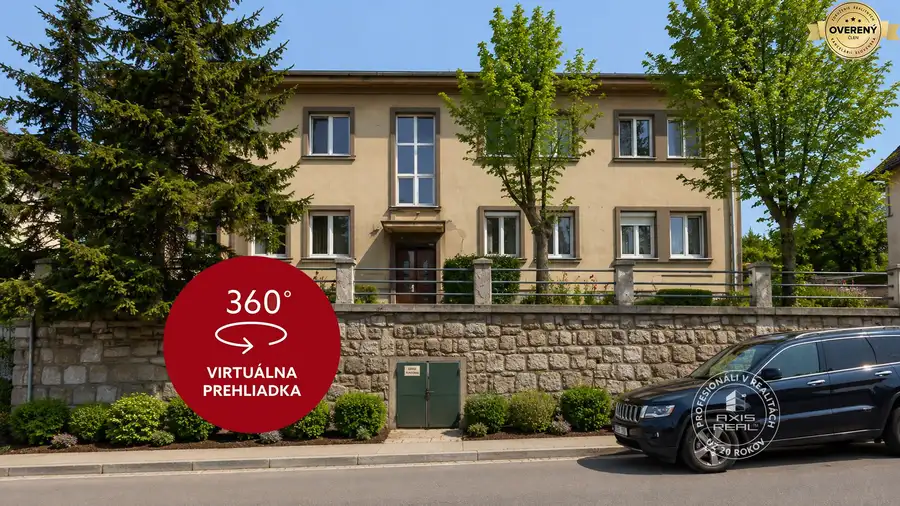
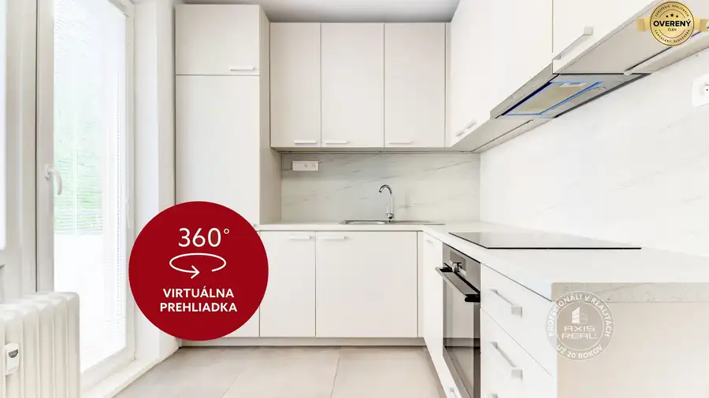

Moderný 2i apartmán, LODŽIA, PIVNICA, GARÁŽ, Panorama City
Staré Mesto, Bratislava
- Dispozícia2-izbový
- Plocha58 m²
- Poschodie6. z 33
- Vlastníctvoosobné
O nehnuteľnosti
POPIS BYTU:
Realitná kancelária AXIS REAL ponúka exkluzívne na predaj tento MODERNÝ A PRIESTRANNÝ 2-izbový apartmán s presklennou lodžiou, pivnicou a garážovým státim v obľúbenej a prémiovej novostavbe PANORAMA CITY na ulici Landererova vo vychýrenej lokalite Downtownu Bratislava I. – Staré Mesto BLÍZKO DO HISTORICKÉHO CENTRA MESTA. Tento priestranný apartmán má celkovú podlahovú plochu 58 m2 (byt 53 m2, lodžia 3 m2 a pivnica 2 m2), nachádza sa na 6. podlaží v 33-podlažnom dome so 4 rýchlovýťahmi a je orientovaný na severovýchod, takže apartmán sa neprehrieva s ohromujúcim výhľadom na Downtown ako na dlani. Ideálny moderný byt v srdci Downtownu aj pre ľudí, ktorí sa boja výšok. Byt pozostáva zo vstupnej chodby, priestrannej obývacej izby s kuchyňou a jedálenskou časťou so vstupom na PRESKLENNÚ LODŽIU (3 m2) s pekným výhľadom na celý Downtown, spálne so širokými parapetami na sedenie a obdivovanie celého Downtownu, priestrannej kúpeľne s vaňou a toaletou. K bytu patrí aj plechová pivnica (2 m2) na odloženie sezónnych alebo športových vecí, prípadne bicyklov a kolobežiek. K bytu prislúcha aj VYHRADENÉ PARKOVACIE MIESTO V MONITOROVANEJ GARÁŽI. Kamerový systém, reprezentatívna RECEPCIA a STRÁŽNA SLUŽBA (24/7) sa postarajú o vašu maximálnu bezpečnosť.
VÝHODY:
❶ Najobľúbenejšia lokalita v blízkosti historického centra mesta a nábrežia Dunaja
❷ Panorama City je prémiový projekt s použitými vysoko-kvalitnými materiálmi a moderným dizajnom
❸ Presklenná lodžia (3 m2) s pekným výhľadom na celý Downtown ako na dlani
❹ Skvelé dispozičné riešenie a funkčné usporiadanie priestoru pre pohodlné bývanie
❺ Tento byt má úplne všetko: kompletné zariadenie, presklennú lodžiu, pivnicu aj vyhradené parkovacie miesto v garáži
❻ Vynikajúca občianska vybavenosť na prízemí a v okolí domu a množstvom pekne upravených parkov
❼ Investičný potenciál ideálny na dlhodobé zhodnotenie vložených finančných prostriedkov prípadne dlhodobý aj krátkodobý prenájom
STAV BYTU:
Bytový dom bol skolaudovaný v roku 2015, pričom pri jeho výstavbe boli použité prémiové materiály a moderné technológie. Byt sa predáva kompletne zariadený a okrem iného disponuje VYSOKÝM ŠTANDARDOM: hliníkové okná s veľkoformátovými panoramatickými sklenenými tabuľami, s tepelne izolačným dvojsklom s akustickým útlmom, drevené podlahy, kvalitná sanita a obklady. V byte je príprava pre osadenie nástenných chladiacich jednotiek s diaľkovým ovládaním v každej obytnej miestnosti. K bytu prináleží aj plechová pivnica (2 m2) na uloženie sezónnych alebo športových vecí, prípadne bicyklov a kolobežiek. K bytu prináleží aj kryté vyhradené a monitorované parkovacie miesto prakticky umiestnené v garáži na 2. p. Aktuálny zálohový predpis za byt je 217Eur mesačne vrátane vonkajšieho umývania okien, bezpečnostnej služby aj recepcie. Správcovská spoločnosť je Danube Facility Services. CENA SPOLU: 329.000 byt + 10.000 pivnica + 50.000 vyhradené vnútorné parkovacie miesto v garáži = 389.000Eur.
LOKALITA:
Byt sa nachádza v novostavbe polyfunkčného komplexu PANORAMA CITY len kúsok od nábrežia Dunaja s cyklotrasou a promenádou v priamom kontakte so Starým Mestom. Priamo v komplexe na prízemí sa nachádzajú potraviny YEME a mnohé kaviarničky, reštaurácie, obchody, služby a krásne udržiavaný park. V tesnej blízkosti sa nachádza obľúbené nákupné centrumEUROVEA s najlepšími službami a obchodmi v Bratislave ako reštaurácie, kaviarne, bary, obchody, banky, fitness, wellness, kino… V pešej dostupnosti sa nachádza aj Slovenské Národné Divadlo, 5-hviezdičkový hotel Sheraton, nákupné centrum NIVY a historické centrum mesta Bratislava. Nábrežie Dunaja ponúka široké možnosti na aktívny aj pasívny oddych, či už športovým vyžitím iba na skok od Dunajskej hrádze ako beh, cyklistika, korčuľovanie, alebo možnosť len tak si posedieť v jednej z mnohých kaviarní nachádzajúcich sa na Dunajskej promenáde. Perfektná dopravná dostupnosť (MHD pred domom, kúsok na Bratislavský obchvat a autobusovú stanicu NIVY). Bývanie v centre Bratislavy NA NAJLEPŠEJ ADRESE prináša komfort a pohodlie.
Máte záujem o viac informácií alebo si chcete nehnuteľnosť pozrieť osobne? Kontaktujte ma a rád Vám zodpoviem všetky otázky a dohodnem termín obhliadky.
František Bakyta | |
/ 2-IZBOVÝ BYT / LODŽIA / PIVNICA / GARÁŽOVÉ STÁTIE / VYSOKÝ ŠTANDARD / PANORAMA CITY / BRATISLAVA I. STARÉ MESTO /EUROVEA / SND / NIVY / DOWNTOWN /
© Text a fotografie sú autorským dielom a vlastníctvom realitnej kancelárie Axis real.
Parametre
| Celková rozloha | 58 m² |
|---|---|
| Úžitková plocha | 58 m² |
| Poschodie | 6/vyššie poschodie |
| Počet poschodí | 33 |
| Počet izieb | 2 |
| Vlastníctvo | osobné |
| Odvoz odpadu | áno - separovaný |
| Internet | optika |
| Kúpeľňa | vaňa |
| Vykurovanie | spoločné – vlastná kotolňa |
| Lódžia | áno |
| Pivnica | áno |
| Garáž | áno - 1 auto |
| Výťah | áno |
| Parkovanie | vnútorné |
| Postavené z | panel |
| Zariadenie | zariadený |
| Zateplený objekt | áno |
| Káblová televízia | áno |
| Bezbariérový prístup | áno |
| Okná | hliníkové |
| Orientácia | severovýchodná |
| Novostavba | áno |
| Dátum zverejnenia | 3. 9. 2026 |
Kde to je
Mohlo by Vás zaujímať
 Byt10
349 000 €Výnimočný veľký 3i byt v pôvodnom stave na Kolibe s garážu
Vinohrady, Bratislava
3-izbový88 m²
POPIS BYTU: Realitná kancelária AXIS REAL ponúka exkluzívne na predaj výnimočný 3-izbový BYT V PÔVODNOM STAVE s terasou, samostatnou garážou, veľkou…
Byt10
349 000 €Výnimočný veľký 3i byt v pôvodnom stave na Kolibe s garážu
Vinohrady, Bratislava
3-izbový88 m²
POPIS BYTU: Realitná kancelária AXIS REAL ponúka exkluzívne na predaj výnimočný 3-izbový BYT V PÔVODNOM STAVE s terasou, samostatnou garážou, veľkou…

Nebytové priestory10 349 000 €Výnimočný veľký 3i byt v pôvodnom stave na Kolibe s garážu Vinohrady, Bratislava 3-izbový88 m² POPIS BYTU: Realitná kancelária AXIS REAL ponúka exkluzívne na predaj výnimočný 3-izbový BYT V PÔVODNOM STAVE s terasou, samostatnou garážou, veľkou…
Byt10 269 000 €Moderný 2,5i byt s lodžiou a balkónom pri Račianskom mýte Nové Mesto, Bratislava 2,566 m²1. podlažie POPIS BYTU: Realitná kancelária AXIS REAL ponúka na predaj nezariadený MODERNÝ 2,5-izbový byt s BALKÓNOM AJ LODŽIOU po KOMPLETNEJ REKONŠTRUKCII…